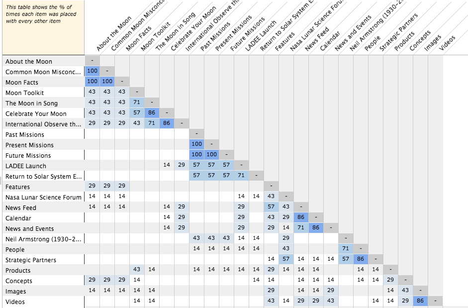

For an assignment, I had to use the card sorting system on an already existing web site. The purpose of this was to determine how to layout information on the site in an intuitive, user-friendly way. The site I conducted this on was the NASA Moon Site. The tool I used for cards sorting is WebSort.
In order to break the site down into bits of content, I looked at the current link structure. I did this since all the differerent links on the page pointed to the content available for the site. I ended up with mainly the links from the navigation, as well as a few other links. I used the text in those links to describe the different pieces of content. Looking back, I think that wasn't the best idea to just go with link text for the most part. I think the issue I fell into with that was that those link names were crafted to fit together in the current information architecture of the site. I think next time, I'll need to try and make the content item names less biased/pregrouped.
I entered these items into WebSort, and did one sort myself. On top of my sort, there were 6 other people that participated. WebSort assigned them anonymous names so I don't know who all did the sort.
| Participant IDs | Categories |
|---|---|
| anon-2a22ef | About the Moon, Events, Market, Missions, Multimedia, People and Groups, Unsorted |
| anon-e51898 | Interact With The Moon, Learn about the Mon, Missions and History, Moon Culture, Navigation |
| anon-176b64 | Current Stuff, Fun Facts, Learn More, Media, Missions, People |
| anon-d9651c | About, Events, Missions & Exploration, Moon, People, Tools, Visual Media |
| anon-346ed0 | Basic, Missions, Moon, Organizations |
| anon-5f23d8 | About Us, Discover, Missions, News, The Moon, Visuals |
| anon-ee9110 | Current Thought, Moon Facts, See and Hear, Timeline, What's Happening, Who's Involved |
I used some of the different tools WebSort had to view the data I collected. I used the Categories x Items option which shows the % of times each item was placed in each group. There were 10 items that were in the same group more than once.
| Category | Items | # of groupings |
|---|---|---|
| Missions | Past Missions, Present Missions, Future Missions | 4 |
| Missions | LADEE Launch, Return tho Solar System Exploration | 2 |
| Events | Calendar, News and Events | 2 |
| People | Neil Armstrong (1930-2012), People, Strategic Partners | 2 |
I also used the Items x Items option to see how often items would be grouped together
From this, I found that About the Moon, Common Moon Misconceptions, and Moon Facts were always grouped together. This was also true for Past Missions, Present Missions, and Future Missions